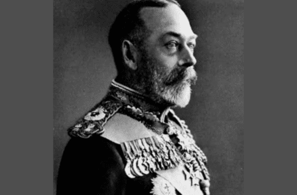

Treaty Medal: A Symbol of Commitment
When the numbered treaty was signed, the government distributed specially made silver medals to the indigenous chiefs. These medals were not only ornaments, but also legal and diplomatic proof of the alliance between the two sides.

The famous First Treaty Handshake Commemorative Medal
Visual Elements Deep Dive
- Handshake: Represents equal status and peaceful coexistence between official representatives and Indigenous leaders.
- Background Symbols: The sun, grass, and teepees in the image represent the land, symbolizing that the treaty encompasses resources across this territory.
- Enduring Oath: Indigenous peoples understand these symbols to mean that the agreement will last "as long as the sun rises and the rivers flow".
Evolution of medal specifications and design
Initially, during the negotiations of Treaty Number One in 1871, the Canadian government's treaty commissioners severely underestimated the significance of medals in Indigenous diplomatic protocol. They initially offered a small silver coin, casually chosen from the stock of J.S. & A.B. Wyon in London, engraved with an oak wreath and the portrait of the young Queen Victoria. This small and thin medal failed to reflect the solemnity of this historic treaty and was considered by the chiefs to be extremely insincere, even being ridiculed as a "medal at an agricultural fair," shaking their confidence in the Canadian government's commitment to fulfilling the treaty. To regain trust, the government replaced it with a larger medal in 1872, 95 millimeters in diameter. However, the chiefs quickly discovered that it was merely silver-plated copper, and as the silver layer peeled away, it was again seen as a hypocritical gesture. It wasn't until the summer of 1873, facing strong protests from the Indigenous peoples who felt their verbal promises hadn't been written into the treaty text, that the government finally reconsidered its decision and commissioned London mints to create a large, pure silver medal with a purity of 99%. This is the famous "Handshake Medal," which depicts a British royal representative shaking hands with an Indigenous chief, with the blank space on the right reserved for engraving the treaty number and date on the spot when subsequent treaties were signed.
Medal purity and indigenous diplomatic etiquette
For Indigenous chiefs, receiving and wearing medals was far more than a simple act of honor; it was deeply rooted in two centuries of North American Indigenous treaty drafting, political initiatives, and diplomatic protocol. It was a symbol of power and a way to demonstrate status and equality in diplomatic settings. Within this diplomatic discourse, the purity of the medal's material was paramount. In the Anishnabe language, silver is called zhooniyaawaabik (meaning "money metal"). Indigenous peoples viewed pure silver as a metal with spiritual and "honest" qualities, and its purity represented the purity and sanctity of the British Royal Family's commitment. When the silver-plated medals of 1872 began to fade and peel, the chiefs considered this frivolous material a desecration of the bilateral alliance; only when the 99% pure silver "Handshake Medal" arrived in 1873 was its pristine silver sheen seen as a manifestation of the Royal Family's candid and open cooperative attitude.
Political Contract and Symbol of Cultural Heritage
These medals are not merely diplomatic tools, but also symbols of cultural heritage. They bear witness to the bilateral political relationship between Indigenous peoples and the government, and their long-standing commitment to sharing land and resources. However, the medals themselves also expose the complexities and contradictions of colonialism at the time. The design on the obverse was created by a London engraver who had never been to Canada. On the left is a representative in British uniform, resembling the Prince of Wales, graphicly confirming the treaty as a supreme alliance between the British Crown and First Nations; while on the right, the Indigenous figure is depicted shirtless and wearing a feathered skirt, a clear copy of the Peace Medal from the American Revolutionary War. This design is filled with the stereotypes of Indigenous peoples as "noble savages" prevalent in Europe at the time, revealing the condescending racist arrogance of the colonizers. In contrast, the actual signatories of the treaty were completely different from the stereotypes on the medals. For example, Chief Gaagige Binesi, who signed Treaty No. 1 on behalf of the Sagkeeng First Nation, is always depicted in historical photographs wearing a dignified treaty chieftain's robes, projecting an image of a wise and thoughtful statesman. Therefore, these medals, as cultural heritage, have a dual significance: on the one hand, they embody the sincere and mutually beneficial commitment to nation-building between the two sides; on the other hand, they also serve as an important vehicle for people today to reflect on and revise the historical narrative of colonialism.

Chief Gajig Binesi

Large Silver-Plated Medal of 1872

Queen's representative
The legacy of history and a testament to reconciliation
These medals, as witnesses to that turbulent history, are still treasured by many Indigenous families. Like Ted Mann, a descendant of Chief Gaagige Binesi, his family has meticulously preserved his ancestor's photograph for five generations, eventually displaying it at the Manitoba Museum. Today, these medals and related historical artifacts serve as powerful evidence. They forcefully refute past racist prejudices that Indigenous people were "too naive to understand the treaty's contents," proving to the world that their ancestors possessed remarkable diplomatic wisdom. These pure silver handshake medals remind everyone today that the treaty was not a unilateral surrender of everything by Indigenous peoples, but a long-term contract between two sovereign entities based on mutual respect, genuine reciprocity, and shared survival. Even today, Indigenous communities continue to rely on this historical evidence to demand that the government honor its initial promises and restore the treaty relationship that should have been based on mutual respect.

Three Treaty Medals